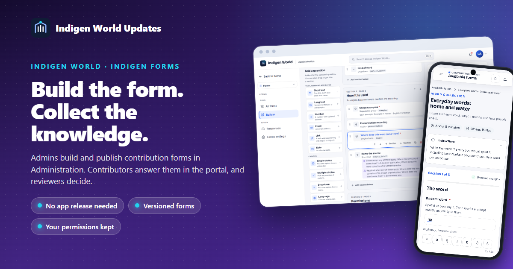
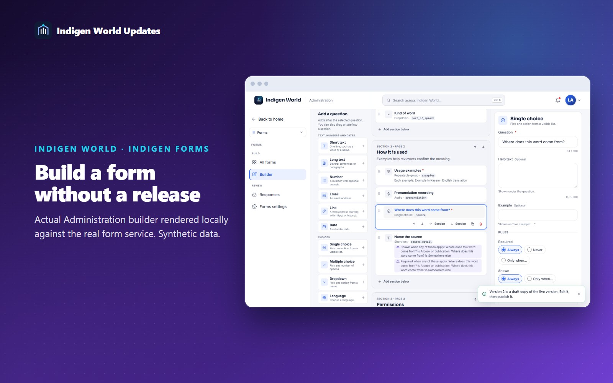
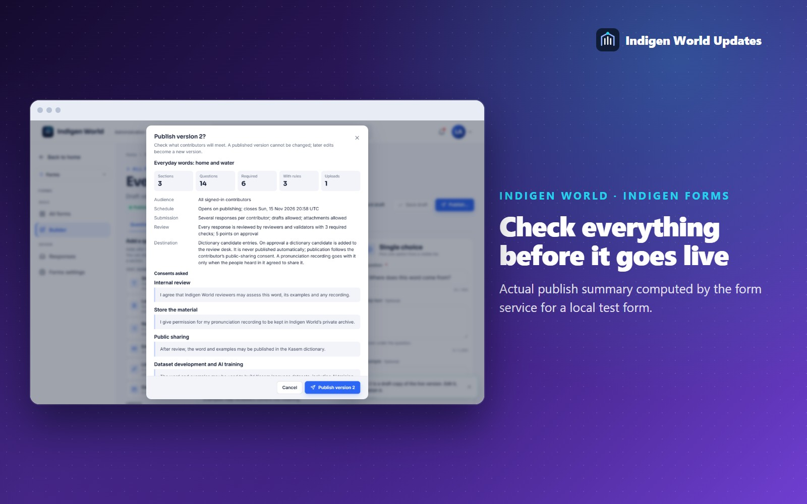
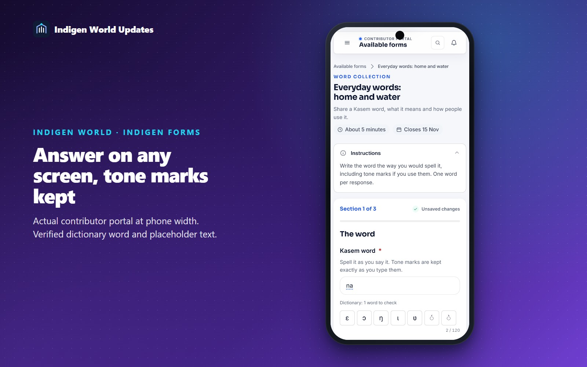
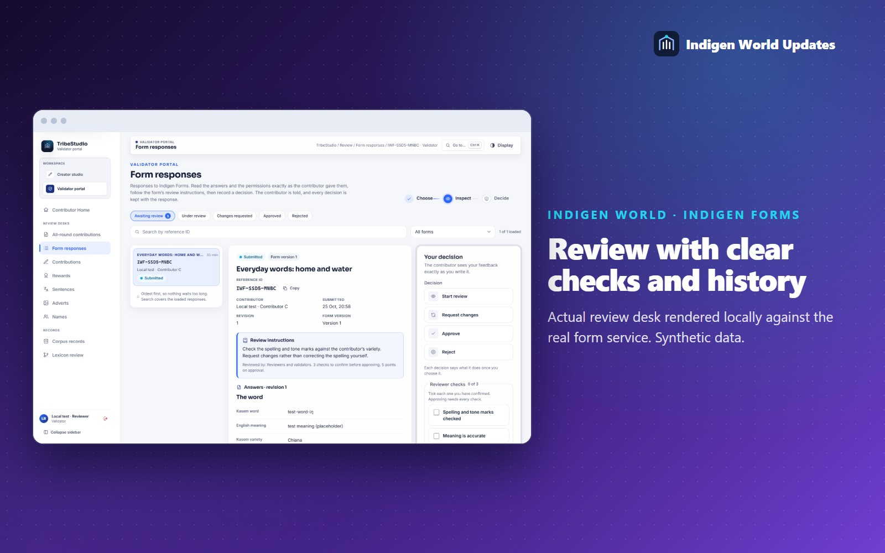

Collecting Kasem words, translations, oral histories or research used to mean waiting for someone to build a new screen. With Indigen Forms, the Indigen World team builds a contribution form in Administration, chooses who it is for, previews it and publishes it, with no new app release. Contributors find it under Available forms in the contributor portal, and reviewers decide on the responses in their review desk.

In Administration, open Forms and start from a blank form or one of five templates: Kasem word collection, sentence translation, oral history, research and documents, and general feedback. Add questions from the palette and arrange them by dragging or with the keyboard: short and long text, numbers, dates, choices, a Kasem variety picker, a checkbox or permission, file, image, audio and video uploads, and repeatable groups such as several examples for one word.
Simple rules show a question, or make it required, only when an earlier answer matches. Choosing Audio recording can reveal a recording question and its instructions; choosing A book or publication can ask for the source. Rules only look back at earlier questions, so they cannot loop, and a hidden question never blocks sending.

Preview shows the form exactly as contributors will see it, on a desktop or a phone-sized screen. Before publishing, a summary lists every section and question, which answers are required, the rules, the uploads, the exact wording of each permission, the audience, the dates, how responses are reviewed and where approved responses go. Nothing publishes while a problem remains.
A published version never changes. Editing a live form creates version 2, 3 and so on. Contributors who started on an earlier version keep their questions, and every submitted response stays readable with the questions it was answered with.

Signed-in contributors see the forms open to them under Available forms, with what each asks for, how long it takes and its deadline. Answers save as drafts, long forms move page by page, and each problem is shown beside the question it belongs to without losing what was typed. Kasem answers keep every tone mark exactly as typed, with the Kasem letter bar and dictionary suggestions where the form asks for them. Before sending, a review step shows every answer and the exact wording of each permission. Each response gets a reference such as IWF-XXXX-XXXX.

My submissions shows where each response stands. If a reviewer asks for changes, their feedback appears with the response, and you can correct and resend it. Earlier versions of your answers are kept.
Reviewers find form responses in the review desk under Form responses. Each response opens with the form's own review instructions, the answers as the contributor saw the questions, attachments through short-lived private links, and the permissions with their wording. A form can require checks, such as spelling and tone marks, before a reviewer can approve. Requesting changes or rejecting needs written feedback. Every decision is recorded with its reviewer and time.

Each permission on a form is a separate choice with its own wording, stored with your response. Approval of a response never grants a permission you did not give: publication, dataset use and AI training depend only on what you ticked. When a form sends approved responses on, such as words to the dictionary's candidate list, they enter that team's own review queue and nothing is published automatically. Points for approved responses go through the existing contributor points, once per response.
Indigen Forms is available in Administration and the contributor portal from 25 October 2026. Forms are for signed-in contributors; public forms for people without a contributor account are not part of this release. Uploads are checked by their real file type, so renaming a file does not get it past the check, but they are not scanned for malware. New kinds of questions, new destinations or public forms still need development; everything else is set up in Administration.